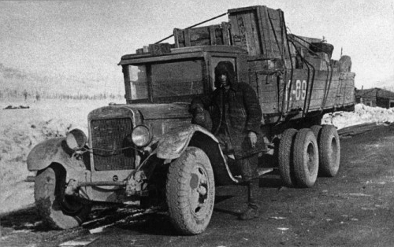

Lessons and Legacy
An analysis of this project and the reasons for its creation

ZIS-6 on the Kolyma Highway, also known as the Road of Bones. 1938.
I. Introduction
The Soviet gulag system of the 20th century changed the lives of tens of millions of people, often for the better but nearly always for the worse. Metaphorically the "archipelago" of camps were scattered all across the U.S.S.R., quite similar to a chain of islands that while being separated by distance they are interconnected by nature. Official documentation and records exist noting the statistics, geographic locations, and correspondence at the camps yet all that remains public are on outdated or little-known websites and archives. The inaccessibility of the gulags in the present day, and constant censorship of the darker elements of the Soviet Union's past by Russia, have slowly eroded the moral reminder of this history and its retelling in literature.
This tension between contemporary relevance and historical distance brings forth an important question: to what extent should the past be passed over in hopes of creating a better future? Such questions will be explored through literary lens and analysis sections, as will many other ethical questions through authors such as Viktor Frankl, Aleksandr Solzhenitsyn, and Anne Applebaum. This approach pursues what literature reveals that sociological or historical accounts alone cannot in examination of totalitarianism systems that exist across cultures, languages, and regimes.
II. Project Overview & Literature Review
This project could be described as an attempt to map much of the gulag system or as a compact and comprehensive resource to learn about the camps. What it is, at minimum, is a digital guide where general history, visual materials, and primary resources can be easily accessed. It came about for four main reasons:
(1) Recently there has been greater censorship around gulag history, both inside and outside of Russia. In 2021 the Memorial Foundation, a Russian non-governmental organization founded in 1989 to examine the human rights violations of the Soviet Union particularly under Joseph Stalin, was dissolved in Russia. The only preserved gulag labor camp, Perm-36 was turned into a "Museum of the History of Political Repression" in 1995 but shut down in 2014 due to the government administration of the Perm Krai federal subject withdrawing support. These, along with the general suppression of information about the gulag system, outdated and lack of accessibility to existing information, and increased governmental control over historical narratives in Russia, have led to decreased public awareness and understanding of the gulag system. Even going back to Solzhenitsyn's days, there was extreme censorship and restrictions around publishing, which he discussed in his memoir The Oak and the Calf. Too, Hutchinson's study of one of Solzhenitsyn's works, Ivan Denisovich showed how even during the Khrushchev Thaw there was still state opposition to works that were a threat to its self-image (Hutchinson "Ivan Denisovich on Trial: Soviet Writers, Russian Identity, and Solzhenitsyn’s Failed Bid for the 1964 Lenin Prize").
(2) The lack of awareness about the gulags among the general public outside of Russia is deeply concerning. When Solzhenitsyn's The Gulag Archipelago was first published, it brought about a wave of interest in the topic, but with each subsequent generation that interest has faded. This may be due to polarizing events such as the Cold War, the lack of educational resources, no recent memory, or the general disinterest in historical events. Yet, other similar systems of forced labor and imprisonment—most notably the Nazi concentration camps and the Chinese labor camps—have been much better documented and studied, while continuing to hold sustained public interest. Too, few educations systems across the world have incorporated learning about the gulag system into their curriculum. Some nations, such as the Czech Republic and Kazakhstan have taken measures to educate and "memorialize" their citizens about the gulag system (Steven Barnes “Remembering the Gulag in Post‑Soviet Kazakhstan”).
(3) The knowledge base online about the gulag system is quite limited, especially in "Western" countries. Many resources used in this project's creation had to be translated and turned into an accessible format for a broader audience, such as “Gulag.cz”. No single comprehensive resource exists for English-speaking audiences, outside of "Gulag: Many days, Many Lives" which itself is a bulky, difficult to navigate, and appears to have ceased being an active project since 2021.
(4) This author has a sustained and personal interest in the topic of the Soviet gulag system and the conditions that led to its creation and expansion. While there have frequently been forced labor systems throughout history, the gulag system was on a magnanimous scale and had unique characteristics—in particular class weaponization—that distinguish it from other systems such as slavery or indentured servitude.
Beyond reasons for the project's creation, the project itself consists of several key elements which work together to form a comprehensive resource on the topic. First is the interactive map and landing page. It includes 69 camps in total, being selected based off of their importance, magnitude of their industry or construction project, if they were special/political camps, their importance to Solzhenitsyn's The Gulag Archipelago, and ease of source verification. These camps, along with their location, time frame, max population, and industry are accessible at the bottom of the map page. The interactive map itself was created by utilizing Natural Earth's 1:10 million map dataset of countries, rivers, lakes, and railroads. From there, the software QGIS enabled the analysis, customization, and ability to add the world coordinates of the gulag camps to the map. The following page explored the history of the gulag system, from basic statistics and a brief history on the system to a gallery of rare images. Due to the importance of Solzhenitsyn's work, a special page was made that covered both his life, literary works, and perspective on the gulag system. Further sources to academic works, documentaries, and organizations were included to enable the reader to dive deeper into the gulags. The last page, where this text sits, explains the why and what to this project while being an academic essay on what made the gulag possible and how literature can convey human experience in the camps.
There is precedent for mapping atrocity and forced labor. Take the Cambodian Genocide Program's interactive geographic database or NAU's comprehensive Genocide GIS. Yet when looking at the gulag system, only two interactive sites currently exist; both of which are at risk of being shut down. Outside of this are a few static maps with camp locations, yet from a holistic and research-based perspective these are minimally useful. They do a good job showing the vast extent of the system, but lack in-depth information. As well, the interactive spatial dimension adds to the utility of a resource and lessens the need to explore multiple different sources for a simple answer. What enables the simple answer in the first place is a foundational understanding of the gulag system through its literary corpus.
Compared to the seismic impact of the gulags, only a few considerable works have been produced on the topic. Most notably and best know is Aleksandr Solzhenitsyn's The Gulag Archipelago. Its daunting three-volume attack on the ideological foundations of the Soviet state and assertion that society was being complicit in the face of mass repression is both an analysis of history and a literary work of global influence. An entire page of this website has been devoted to the author and his major work which are largely responsible for exposing the scale and brutality of the gulag system. Anne Applebaum also wrote a book, inspired by Solzhenitsyn, on the historical narrative and economic vitality of the forced labor camps in the Soviet Union. Titled Gulag: A History, it relies on more recent statistical figures and findings while drawing heavily on memoir and testimony. Similarly, Steven Barnes argued how the gulag system was not just a tool of repression of utilitarian design, but rather a fundamental tool used to remake the individual and society through ideological correction and forced labor (Steven Varnes Death and Redemption: The Gulag and the Shaping of Soviet Society). Applebaum's more recent work, Autocracy, Inc. presents the reasons why oppressive states such as modern-day Russia continue in their ways, even in a globalized world. Paralleling the history of the gulags are the Nazi concentration camps. Viktor Frankl's Man's Search for Meaning explains his form of psychotherapy known as logotherapy, but more important to this discussion he goes directly into his experiences and reflections in the Nazi camps during the Holocaust. In comparable and often worse conditions than the gulag camps, one has to ask how a human survives not just physically but mentally and spiritually through such difficulty. Frankl, Solzhenitsyn, and others who survived often arrive at similar understandings and express the same existentialism in a humanistic way; echoing Jean-Paul Sartre's view that existentialism is not a philosophy of nihilism but rather one of hope due to the one true freedom of every individual, being to choose their response to suffering.
More works explore the depths of the camp systems and philosophies around totalitarian states. Take the recently published work in 2017 on how Russia has return to totalitarianism in Masha Gessen's The Future Is History: How Totalitarianism Reclaimed Russia. Or another one of Solzhenitsyn's many works, such as One Day in the Life of Ivan Denisovich which describes the harsh day in the life of a gulag prisoner. Too, not dissimilar systems of repression existed at scale in China from 1950 until 1976 during the Campaign to Suppress Counterrevolutionaries, the Anti-Rightist Campaign, and the Cultural Revolution. Poetry such as Chinese works 你要老实交代 and 这首诗曾经存在 in Yu Jian's Flashcards took an artistic approach to condemning the state during these times, often due to every other medium being too dangerous to publish in. Jian's opposition to the state can be heard in works such as this: "Originally this poem was written / for a living person / but my view of this person has changed / I have erased every single trace of the poem / like a tyrant / who executes a minister he no longer favors" (Yu Jian Flashcards, 39). Yet, what these works and many more to come foundationally investigate has to do with state control through internal repression and its effects on even the lowest citizen in society. Many commonalities exist between all of these works, even with the vast differences in culture and technology.


Corpses executed by Cheka, 1918. On the left, Tulpanov's house in Kherson and on the right a yard in Kharkiv, both in the Ukrainian SSR.
III. What Made the Gulag Possible - A Literary Lens
No single outcome of human history can clearly point to a few causations to fully explain an event. There will always be many unknown and unanalyzed factors, not to forget about the persistent role of chance. The story of the origins, development, and fall of the gulag system reflects this complexity: while certain laws, political leaders, and uprisings can be pointed to as contributing factors, much of the system's evolution remains unexplained and difficult to rationalize. Contrary to many historians who viewed the gulags as rising from Stalin's reign, Solzhenitsyn in The Gulag Archipelago laid the ideological roots at the feet of Marxist-Leninist notions of "class enemies" with the purpose of correcting these people through forced labor and ideological re-education (Steven Barnes Death and Redemption: The Gulag and the Shaping of Soviet Society). In this view, the vast system was made possible not by a well organized and methodical plan, but rather was the consequence of an ideology that divided society into the "haves" against the "have-nots", prescribing moral worth and political legitimacy based on class status. Those who were successful—lawyers, writers, statesmen, managers, and more—could be recast as "enemies" due to their status rather than their actions. Even Ukrainian farmers—labeled "kulaks" during collectivization—who only fifty years beforehand been peasants that had gone on to productively work their land were labeled as class enemies because they had seen gradual improvements in their livelihoods. Engineers and technical specialists were also frequently targeted and were presumed to be sabotaging the state or "wrecking" because of their association with expertise and high economic output. How exactly such classes were made enemies of the state frequently came down to how such terms as "profiting" were defined. Shifting political language, rather than relying on fixed definitions, allowed such terms and labels to be loosely applied and expanded to justify repression (Aleksandr Solzhenitsyn The Gulag Archipelago).
The machinery implementing the consequences of such ideology were principally Article 58 and the NKVD. Much has been written on Article 58, especially 58-1 as it was the instrument used to repress "counter-revolutionary activities". Its vague language left it open to extensive interpretation, and when paired with interrogators who were largely legally unchecked, prisoners would often be implicated based on minute associations or after several rounds of torture. The NKVD was the arm rounding up, arresting, interrogating, and causing the disappearance of citizens. Partially through a narrative of fear—which internalized itself and became pervasive—and compliance did the NKVD manage to efficiently send away millions to the gulags (Masha Gessen The Future Is History: How Totalitarianism Reclaimed Russia). Broader Soviet society was not innocent either, as it began to police itself over time. Often rewards would be given out for reporting a neighbor or coworker suspected of "rebellious activities" (Aleksandr Solzhenitsyn The Gulag Archipelago). Many times it was also the jealousy and suspicion of others that led to reporting to state auhtorities. Not only this, but much of the citizenry knew what was occurring and stayed complicit, otherwise they risked being arrested too. One cannot say every person's inaction led to the gulags becoming factory scale, but it reflects on what each individual saw as their moral duty and responsibility to others (Fyodor Dostoevsky The Karamazov Brothers).
Geography as an instrument and the role of the individual in the camps must also be examined. Solzhenitsyn, in a stroke of genius described the gulag system as an "archipelago". Not only is the chain of separated islands visually evoking, but "The Gulag Archipelago" relates the overarching system in which every separate camp shared commonalities. While some camps were not far from populated areas, often tasked with construction projects such as the Moscow Canal, many were severely isolated. It was not uncommon for camps to be in remote regions such as Siberia or the Arctic Circle. Through isolationism, geography played a central role in erasing "undesirables". Yet, determining who exactly fell under the term undesirable or who was or was not evil is a tricky problem. Solzhenitsyn famously said that “The line separating good and evil passes not through states, nor between classes, nor between political parties either—but right through every human heart—and through all human hearts. This line shifts. Inside us, it oscillates with the years. And even within hearts overwhelmed by evil, one small bridgehead of good is retained” (Aleksandr Solzhenitsyn The Gulag Archipelago, 615). Interestingly, Frankl's work discussed a very similar division between good and evil: “[T]here are two races of men in this world, but only these two—the "race" of the decent man and the "race" of the indecent man. Both are found everywhere; they penetrate into all groups of society. No group consists entirely of decent or indecent people" (Viktor Frankl Man’s Search for Meaning, 86). It must be made clear that this difference is not often clear or easily recognizable, especially when applied to groups. From an individual perspective, one is less likely to fall into "evil" if they recognize what they themselves are capable of and come to terms with it. To clarify this point, one cannot know how they will act until they are put in the situation, such as fighting to stay off the list of prisoners that will be sent to the gas chambers. Frankl in particular saw that the individual that balances freedom with responsibility has the most potential to be "good". And if not every but most individuals in a society work towards their utmost potential to be good, totalitarian systems are less likely to exist.
IV. Comparative Literature Analysis (Literature as a Witness)
Literature, from Solzhenitsyn's lengthy works to Jian's short poems, is a powerful tool for witnessing and documenting the human experience, and until the last few decades, it was often the only way to see a glimpse of others' experiences. Anne Applebaum's Gulag Voices: An Anthology displayed how individual testimonies and memiors could provide a more complete picture of the gulag system. Readers of literature can also connect with the experiences of others, yet many can overly rely on such texts and believe they know more than they actually do. Therefore, it is important to approach literature from a critical perspective, recognizing both its potential and limitations.
One of the biggest challenges in literature, especially in the context of witnessing and documenting extreme events, is that of testimony. Both Solzhenitsyn and Frankl heavily relied on testimony of which they repeatedly gave their own and others' accounts. Rather than simply pulling facts and figures or other historical references, they focused on the personal, emotional, and psychological aspects of their experiences. This appears to be a decision they made as they understood that the human experience is most effectively conveyed through personal narratives and emotional depth. They did not see another viable way to write about the extreme suffering and miseries they had experienced in the Gulag and concentration camps respectively. Testimony and narrative have the ability to bring ethical stakes into the discussion yet are still unable to fully capture the nuances and scale of such experiences. Just take the relatively small number of gulag camps shown on the map, which represents not even a sixth of the total number of camps and the scale of the phenomenon. There is a polar duality, where on the one hand literature can be extraordinarily powerful in relating suffering, such as how the publication of Solzhenitsyn's One Day in the Life of Ivan Denisovich was a shock to the Soviet system (Erin Hutchinson "Ivan Denisovich on Trial: Soviet Writers, Russian Identity, and Solzhenitsyn’s Failed Bid for the 1964 Lenin Prize"). At the same time, literature is limited in its ability to put the real stakes of such experiences into words.
Suffering is a central theme in both works, and each author approached it separately. Solzhenitsyn focused on depicting the physical and psychological torment inflicted by the guards but also by the harsh conditions of the camps. It is through this suffering that he was able to convey the full extent of the human experience in the camps, similarly to how Dostoevsky described suffering as being the foundation of moral clarity. Frankl, on the other hand, focused on the psychological and existential aspects of suffering. For example, he reflected on what it meant when a prisoner gave away their last piece of bread to another prisoner; roughly put, this act showed how even in the most miserable conditions, humans could stand upright and maintain their dignity. Both authors emphasized the importance of finding some meaning in the camps as it was often the only form of resilience they had. In Man's Search for Meaning, Frankl described suffering as the birth of responsibility, in a strangely similar fashion to many of the different religious traditions. Running through all of these works and across many more worldwide is the theme of resilience and the human capacity to find meaning in suffering, whether it be voluntary or not. There is a common thread of individual responsibility that connects all these works together.
V. Conclusion & Future Recommendations
Similar consequences and human responses exist towards totalitarian regimes and the suffering they, and every other system, beset. Both the gulags and the experiences of those in the Nazi forced labor camps share common themes of suffering, resilience, and the search for meaning. This project's aim was to visualize and provide a comprehensive understanding of the gulag system, with as little bias as possible as this subject has always been prone to manipulation. By presenting an interactive map and incorporating sources, the gulag system can be better understood, especially by English-speaking audiences.
Yet, there exist significant gaps in the available data and sources, as well as translation and access issues. Too, the reliability of much data—especially that of the exact geographical positioning of camps—parsed during this project was questionable and hence left out due to its briefness and lack of verifiability . So the end product, while accurate and informative, is limited in scope and depth due to these limitations. Future research could address these gaps and improve the completeness of the dataset. Many more elements could also be incorporated to enhance the learning experience, such as adding prisoner testimony layers, deportation routes, interactive government and camp hierarchies, and non-Soviet literary works. This author hopes that the project will serve as a contemporary resource for understanding the gulag system and its implications.
Solzhenitsyn's warning about the dangers of totalitarianism still remains relevant in today's world. As much as history is behind current times, many of its darkest elements will likely repeat themselves. As Anne Applebaum once said in Gulag: A History: "Totalitarian philosophies have had, and will continue to have, a profound appeal to many millions of people. Destruction of the “objective enemy,” as Hannah Arendt once put it, remains a fundamental object of many dictatorships" (Anne Applebaum Gulag: A History, 586). And when society forgets or chooses to ignore the atrocities of the past, it often slides back into the same patterns of repression and control (Masha Gessen The Future Is History: How Totalitarianism Reclaimed Russia). Many a time this is a choice which stemmed out of a group who wanted to believe they were building a better world. Yet, too often their moral judgement was clouded by ideology and lacked moral reflection (Aleksandr Solzhenitsyn, Commencement Address at Harvard University).
From left to right: Eugeniusz Bodo, Jerzy Urbankiewicz, and Wacław Kopisto-Jaworski. All Polish and arrested by the NKVD in 1941, 1944, and 1944 respectively.
VI. Annotated Bibliography
Primary Sources
- Applebaum, Anne. 2003. Gulag: A History. New York: Doubleday Books.
A realist comprehensive history of the Gulag system, with a particular emphasis on life and work within the camps. It focuses on origins, unraveling, and central economic institution the Gulag system became. Winner of the 2004 Pulitzer Prize for General Nonfiction.
- Frankl, Viktor E. 2014. Man’s Search for Meaning. Boston: Beacon Press.
An influential work by a psychiatrist and Holocaust survivor, the book dives into his experiences in the Nazi concentration camps and describes the human capacity to find meaning in suffering. His theory, logotherapy introduced in the second part of the book, provides a framework for understanding how humans create purpose in their lives even in the most difficult circumstances.
-
Solzhenitsyn, Aleksandr Isaevich 2007a.
The Gulag Archipelago: An Experiment in Literary Investigation, Volume 1.
New York: HarperCollins.
———. 2007b. The Gulag Archipelago: An Experiment in Literary Investigation, Volume 2. New York: HarperCollins.
———. 2007c. The Gulag Archipelago: An Experiment in Literary Investigation, Volume 3. New York: HarperCollins.
Solzhenitsyn's "literary investigation" is the primary source for understanding the Gulag system and its impact on Soviet society. It combines the personal experiences of hundreds of fellow prisoners with historical and legal analysis of the Soviet state which enabled the camps to function as a tool of repression and control. The work is not only one of historical documentation, but also a personal and moral testament. Winner of the 1970 Nobel Prize in Literature.
Secondary Sources
- Applebaum, Anne. 2025. Autocracy, Inc.: The Dictators Who Want to Run the World. New York: Random House.
A brief analysis of the unseen struggle between democratic and autocratic systems. As well as an examination of the shared methods and ambitions of autocracies even though their principles widely differ.
- Applebaum, Anne. 2011. Gulag Voices: An Anthology. New Haven: Yale University Press.
This brief work compiles thirteen voices from the Gulag system, describing individual accounts through personal memoirs and backgrounds.
- Barnes, Steven A. 2011. Death and Redemption: The Gulag and the Shaping of Soviet Society. Princeton: Princeton University Press.
A detailed examination of the utilitarian aspects of the Soviet Gulag system in attempting to create a utopian society. It looks at the role of forced labor in molding society and correcting those who "failed" to integrate into the system.
- Barnes, Steven A. 2020. “Remembering the Gulag in Post‑Soviet Kazakhstan.” In Museums of Communism: New Memory Sites in Central and Eastern Europe, edited by Stephen M. Norris, 107-35. Bloomington: Indiana University Press. https://doi.org/10.2307/j.ctv174t7d7.8.
A discussion on the role of museums and memorials in preserving the memory of the Gulag system in Kazakhstan. As well, the chapter is interested in laying out how Kazakhstan has acknowledged its legacy, created a narrative capturing Soviet repression, and promoted national unity.
- Dostoevsky, Fyodor. 2008. The Karamazov Brothers. Oxford: OUP Oxford.
Considered a masterpiece of Russian literature, the novel rigorously explores the themes of faith, doubt, and moral responsibility. Many times it is referenced by Solzhenitsyn in his works to illustrate the stark contrasts and surprising similarities between literature and the human condition.
- Gessen, Masha. 2017. The Future Is History: How Totalitarianism Reclaimed Russia. New York: Penguin.
A journalistic work and cautionary examining how totalitarianism has once again come to prominence from the collapse of the Soviet Union to modern Russia.
- “Gulag.cz.” Gulag.cz. 2009. https://gulag.cz/en.
A site founded by the Czech association with various projects, including movies and exhibitions, as well as news on the Gulags, Soviet totalitarianism, and modern events in Russia.
- “Gulag: Many Days, Many Lives.” Gulag History. 2021. https://gulaghistory.org/.
An archive with exhibits and resources of many forms covering the Soviet Union's forced labor camps.
- Hutchinson, Erin. "Ivan Denisovich on Trial: Soviet Writers, Russian Identity, and Solzhenitsyn’s Failed Bid for the 1964 Lenin Prize." Kritika: Explorations in Russian and Eurasian History 22, no. 1 (2021): 75-106. https://dx.doi.org/10.1353/kri.2021.0003.
This article looked at the political and cultural context surrounding Solzhenitsyn's 1962 novel One Day in the Life of Ivan Denisovich. It argues that the controversy around the novel's reception and bid for the prestigious Lenin Prize reflects the broader tensions and conflicting internal perspectives over the history and identity of the Soviet Union.
- Jian, Yu, Wang Ping, and Ron Padgett. Flash Cards: Chinese and English Bilingual Version. The Chinese University of Hong Kong Press, 2011. https://doi-org.ezpv7-web-p-u01.wpi.edu/10.2307/j.ctt1p9wr7g.
A simple yet elegant work of poetry that is both "a primer of modern Chinese daily life" and a subtle critique of the grand language of the state.
- Solzhenitsyn, Alexander. 2013. One Day in the Life of Ivan Denisovich. New York: Important Books.
A brief novel published in 1962 that describes a single day in the life of a Soviet labor camp prisoner, Ivan Denisovich Shukhov. Due to a brief political change, known as the Khrushchev Thaw, it remained the only major work to openly criticize Stalinist repression published in the Soviet Union until the late 1980s.
- Solzhenitsyn Center. 1978. “Aleksandr Solzhenitsyn’s Commencement Address at Harvard University.” YouTube. https://www.youtube.com/watch?v=WuVG8SnxxCM.
Titled A World Split Apart, Solzhenitsyn criticized both the East and the West in his address; the East for its totalitarianism and the West for its unchecked freedoms and lack of responsibility.
- Solzhenitsyn, Aleksandr Isaevich, and Harry Taylor Willetts. 1980. The Oak and the Calf: Sketches of Literary Life in the Soviet Union. New York: HarperCollins.
Published in 1975 in Russian, The Oak and the Calf is a memoir of his experiences and attempts to publish his work in the Soviet Union.
Technical Resources
- “Natural Earth - Free Vector and Raster Map Data at 1:10m, 1:50m, and 1:110m Scales.” Natural Earth. 2009. https://www.naturalearthdata.com/.
Public domain map datasets for use in geographic information systems. The most detailed scale, 1:10 million, utilized with integrated vector data.
- “QGIS: Spatial Without Compromise · 4.0: Norrköping.” QGIS. 2026. March 2026. https://qgis.org/.
Open-source mapping (geographic information system) software. It is used for developing and analyzing geographic data. Released July 2002, most recent release 4.0 was Norrköping in March 2026.